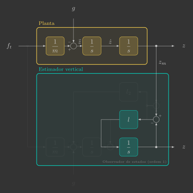

Estimador vertical
Nesta secção você irá implementar o estimador vertical, que estima a posição \(z\) e velocidade \(v_z\) a partir da leitura do sensor de proximidade \(d\).

Para isto, será implementada uma nova função:
verticalEstimator()
Além de uma alteração em uma função já previamente implementada:
sensors()
Implementação
Para começar, copie e cole o arquivo attitude_controller.c e renomeie ele para vertical_estimator.c.
Definições
Variáveis globais
Declare mais algumas variáveis globais, que são as variáveis que entram e saem da função do estimador vertical.
// Sensors
float ax, ay, az; // Accelerometer [m/s^2]
float gx, gy, gz; // Gyroscope [rad/s]
float d; // Range [m]
// System states
float phi, theta, psi; // Euler angles [rad]
float wx, wy, wz; // Angular velocities [rad/s]
float z; // Vertical position [m]
float vz; // Vertical velocity [m/s]
Variáveis de registro
Adicione as variáveis criadas ao grupo de registro previamente definido, para que seja possível visualizar nossa estimativa em tempo real no Crazyflie Client.
// Logging group that stream variables to CFClient.
LOG_GROUP_START(stateEstimate)
LOG_ADD_CORE(LOG_FLOAT, roll, &log_phi)
LOG_ADD_CORE(LOG_FLOAT, pitch, &log_theta)
LOG_ADD_CORE(LOG_FLOAT, yaw, &log_psi)
LOG_ADD_CORE(LOG_FLOAT, z, &z)
LOG_ADD_CORE(LOG_FLOAT, vz, &vz)
LOG_GROUP_STOP(stateEstimate)
Loop principal
Inclua no seu loop principal a chamada da função verticalEstimator() entre as funções attitudeEstimator() e attitudeController().
// Main application task
void appMain(void *param)
{
// Infinite loop (runs at 200Hz)
while (true)
{
reference(); // Read reference setpoints (from Crazyflie Client)
sensors(); // Read raw sensor measurements
attitudeEstimator(); // Estimate orientation (roll/pitch/yaw) from IMU sensor
verticalEstimator(); // Estimate vertical position/velocity from range sensor
attitudeController(); // Compute desired roll/pitch/yaw torques
mixer(); // Convert desired force/torques into motor PWM
actuators(); // Send commands to motors
vTaskDelay(pdMS_TO_TICKS(5)); // Loop delay (5 ms)
}
}
Funções
Sensores
Inclua na função sensors() um código adicional que pega a leitura do sensor de proximidade e armazena ela na variável global previamente declarada.
// Get sensor readings from estimator module
void sensors()
{
// Declare variable that store the most recent measurement from estimator
static measurement_t measurement;
// Retrieve the current measurement from estimator module
while (estimatorDequeue(&measurement))
{
switch (measurement.type)
{
// Get accelerometer sensor readings and convert [G's -> m/s^2]
case MeasurementTypeAcceleration:
ax = -measurement.data.acceleration.acc.x * g;
ay = -measurement.data.acceleration.acc.y * g;
az = -measurement.data.acceleration.acc.z * g;
break;
// Get gyroscope sensor readings and convert [deg/s -> rad/s]
case MeasurementTypeGyroscope:
gx = measurement.data.gyroscope.gyro.x * pi / 180.0f;
gy = measurement.data.gyroscope.gyro.y * pi / 180.0f;
gz = measurement.data.gyroscope.gyro.z * pi / 180.0f;
break;
// Get flow sensor readings [m]
case MeasurementTypeTOF:
d = measurement.data.tof.distance;
break;
default:
break;
}
}
}
Estimador vertical
A função verticalEstimator() é quem estima a posição e velocidade vertical a partir da leitura do sensor de proximidade.
// Estimate vertical position/velocity from range sensor
void verticalEstimator()
{
}
O sensor de proximidade utilizado é o VL53L1X, da STMicroelectronics, localizado no Flow Deck v2.

Esse sensor utiliza tecnologia VCSEL ("Vertical Cavity Surface Emitting Laser"), que mede a distância de um objeto com base no tempo de voo - ToF ("Time of Flight") - dos fótons emitidos. Ele possui um alcance de aproximadamente 4 cm a 4 m e uma taxa de amostragem máxima de 50 Hz.
Sensores de proximidade são dispositivos capazes de medir a distância de um objeto sem contato físico, geralmente por meio da emissão e recepção de ondas refletidas. O princípio é sempre o mesmo — emite-se uma onda, analisa-se o retorno — variando apenas o tipo de onda e a propriedade medida (tempo de retorno, intensidade ou diferença de fase).
Eles podem ser classificados em três categorias principais:
- Radar ("Radio Detection and Ranging") — utilizam ondas eletromagnéticas de rádio
- Sonar ("Sound Navigation and Ranging") — utilizam ondas sonoras (ultrassônicas)
- Lidar ("Light Detection and Ranging") — utilizam ondas eletromagnéticas de luz (infravermelha ou laser)
Sensores VCSEL, como o VL53L1X, são portanto um tipo específico de Lidar, operando no espectro infravermelho próximo e com alta precisão em curtas distâncias.
Valor medido
Embora o sensor de proximidade meça a distância ao solo no referencial do drone, o que realmente nos interessa é a altura em relação ao sistema inercial. Para isso, precisamos corrigir a medida levando em conta a inclinação do drone.
2D
Determine a posição vertical medida \(z_m\) a partir da leitura do sensor de proximidade \(d\) e do ângulo de rolagem \(\phi\).
Resposta

3D
Determine a posição vertical medida \(z_m\) a partir da leitura do sensor de proximidade \(d\) e dos ângulos de rolagem \(\phi\) e inclinação \(\theta\).

Resposta

Inclua na função verticalEstimator() uma variável local \(z_m\), que corresponde ao valor medido a partir da leitura do sensor de proximidade \(d\) e dos ângulos de rolagem \(\phi\) e inclinação \(\theta\) e, em seguida, atribua ela a distância vertical estimada \(z\).
// Estimate vertical position/velocity from range sensor
void verticalEstimator()
{
// Measured distante from range sensor
float z_m =
// Estimated distance
z =
}
Verifique como está sua estimativa, para isso carregue esse programa no drone e utilize o Crazyflie Client para visualizar o resultado.
Resultado esperado
Você deve notar que estamos compensando corretamente alterações na orientação do drone. No entanto, a estimativa possui muito ruído. Ao invés de utilizarmos um filtro passa-baixas (como no estimador de atitude) para remover esse ruído, vamos utilizar agora um observador de estados.
Observador de estados
Um observador de estados é um modelo que, a partir das entradas e saídas do sistema real (planta), estima internamente os seus estados.
No nosso caso, a planta é a dinâmica vertical do drone e o observador de estados é um sistema cujas entradas são a força de propulsão total \(f_t\) e a posição vertical medida \(z_m\), e as saídas são a posição e velocidade verticais estimadas \(z\) e \(v_z\), conforme diagrama de blocos abaixo:

Vamos projetar três observadores de estados na sequência um do outro. O primeiro será bem simples, de ordem 1. Em seguida, vamos torná-lo mais sofisticado, de ordem 2. Por fim, vamos considerar a entrada da planta em nosso observador.
Observador de ordem 1
Vamos começar assumindo que o drone está parado, ou seja, sua posição vertical permanece constante:
Chamamos esse caso de observador de ordem 1, pois o modelo da planta é descrito por uma equação diferencial de primeira ordem:
Agora, se realimentarmos a diferença entre a posição vertical medida \(z_m\) e a estimada \(z\), obtemos um sistema cuja estimativa converge exponencialmente para a medida, desde que o ganho do observador \(l\) seja positivo:

Esse diagrama de blocos pode ser resumido em uma única função de transferência:
Note que essa função de transferência é idêntica à de um filtro passa-baixas de primeira ordem, com o ganho \(l\) desempenhando o papel da frequência de corte \(\omega_c\):
Em outras palavras, um observador de ordem 1 é equivalente a um filtro passa-baixas: ele suaviza a medição, filtrando ruídos de alta frequência e preservando a tendência lenta da posição vertical.
Como o observador será implementado em um microcontrolador, precisamos encontrar sua forma discreta. Você já fez isso anteriormente para um filtro passa-baixas usando o método de Euler implícito. Desta vez, vamos aplicar o método de Euler explícito(1):
-
A expressão derivada é idêntica à que você já viu antes:
\[ z[k+1] = \underbrace{\left(1-l\Delta t\right)}_{\left(1-\alpha\right)} z[k] + \underbrace{l\Delta t}_{\alpha} z_m[k] \]No entanto, o valor de \(\alpha\) agora é dado por:
\[ \alpha = l \Delta t \]Isso significa que ele pode ultrapassar 1 se \(l\) for muito alto — o que torna o sistema instável. Essa é a desvantagem do método explícito em relação ao implícito. No entanto, basta garantir que:
\[ l < \frac{1}{\Delta t} \]
A equação discretizada pode ser reescrita de modo a evidenciar suas duas partes - uma de predição e outra de correção:
- A parte de predição "prevê" o valor com base no modelo (neste caso, de que a posição vertical permanece constante)
- A parte de correção "corrige" o valor com base na medição (neste caso, a diferença entre a posição medida e prevista)
De forma equivalente, podemos representar o processo em duas etapas sequenciais, como será implementado no código(1):
- A etapa de predição é redundante neste caso, pois o modelo é de ordem 1 e não há dinâmica a propagar — o estado simplesmente permanece constante. Ainda assim, mantemos essa etapa para preservar a estrutura geral do observador (predição seguida de correção), que será reutilizada nos casos de ordem 2, onde a predição efetivamente calcula a evolução do estado.
Modifique sua função verticalEstimator() para que a distância vertical \(z\) seja estimada por um observador de ordem 1 com as etapas de predição e correção.
// Estimate vertical position/velocity from range sensor
void verticalEstimator()
{
// Estimator parameters
static const float wc =
static const float l =
// Measured distante from range sensor
float z_m =
// Prediction step (model)
z =
// Correction step (measurement)
z =
}
Resultado esperado
Apesar da estimativa possuir bem menos ruído agora, ela está lenta quando movimentamos o drone. Isso ocorre pois nosso modelo assume que o drone está sempre parado, o que nem sempre é verdade. Para corrigir isso, vamos sofisticar um pouco nosso observador de estados.
Observador de ordem 2
Agora, vamos considerar que o drone está em movimento mas com velocidade constante:
Nesse caso, temos um observador de ordem 2, já que a planta é representada por uma equação diferencial de segunda ordem, ou seja, duas equações de primeira ordem encadeadas:
Agora, se realimentarmos a diferença entre a posição vertical medida \(z_m\) e a estimada \(z\) em ambas as equações diferenciais, obtemos um sistema cuja estimativa converge exponencialmente para a medida, desde que os ganhos do observador \(l_1\) e \(l_2\) sejam positivos:

Esse diagrama de blocos pode ser resumido em uma única função de transferência:
Agora, a função de transferência é idêntica a de um filtro passa baixas de ordem dois, em que os ganhos \(l_1\) e \(l_2\) dependem da frequência de corte \(\omega_c\) mas também do fator de amortecimento \(\zeta\):
Sinais com frequências inferiores à frequência de corte \(\omega_c\) possuem ganho 1 (não são atenuados), enquanto que, sinais com frequências superiores à frequência de corte \(\omega_c\) possuem ganho 0 (são atenuados). Essa transição é contínua, podendo ser muito mais acentuada em um observador de ordem 2 do que de ordem 1, devido a possibilidade de ajustar o fator de amortecimento \(\zeta\):

Quanto menor for o fator de amortecimento \(\zeta\), mais acentuada será esta transição. No entanto, quando \(\zeta < \frac{\sqrt{2}}{2}\), começa a haver um aumento do ganho para frequências próximas à frequência de corte, fenômeno conhecido como ``ressonância'':

Queremos que a curva seja o mais acentuada possível porém sem gerar ressonância. É comum fixarmos o valor de \(\zeta\) em \(\frac{\sqrt{2}}{2}\), que nos garante isso.
Aplicando novamente o método de Euler, chegamos nas seguintes equações discretizadas:
Que podem ser divididas em duas etapas, uma de predição e outra de correção:
Modifique sua função verticalEstimator() para que a distância vertical \(z\) e velocidade vertical \(v_z\) sejam estimados por um observador de ordem 2 com as etapas de predição e correção(1).
- Na etapa de correção, primeiro nós corrigimos o valor de \(v_z\) e depois de \(z\) para garantir que o valor utilizado de \(z\) no cáculo da correção seja o mesmo em ambas as equações.
// Estimate vertical position/velocity from range sensor
void verticalEstimator()
{
// Estimator parameters
static const float wc =
static const float zeta =
static const float l1 =
static const float l2 =
// Measured distante from range sensor
float z_m =
// Prediction step (model)
z =
vz =
// Correction step (measurement)
vz =
z =
}
Carregue esse programa no drone e utilize o Crazyflie Client para verificar como está sua nova estimativa.
Resultado esperado
Sua estimativa deve estar muito melhor, filtrando ruídos e respondendo mais rápido a variações na velocidade. Além disso, agora estamos estimando também a velocidade vertical, que será essencial ao controlador a ser implementado.
Observador de ordem 2 (com entrada)
Por fim, vamos considerar que a aceleração do drone, em vez de ser nula, depende das forças atuantes — o peso e o empuxo gerado pelos motores:
O observador permanece de ordem 2, mas inclui a entrada de controle:
Isso significa que agora sua dinâmica é uma cópia fiel da planta, conforme pode ser verificado no diagrama de blocos abaixo:

As etapas depredição e e correção são quase idênticas, com uma leve alteração (apenas na predição da velocidade):
Modifique a etapa de predição de \(v_z\) na sua função verticalEstimator() para que ela leve em consideração também as entradas do sistema.
// Estimate vertical position/velocity from range sensor
void verticalEstimator()
{
// Estimator parameters
static const float wc =
static const float zeta =
static const float l1 =
static const float l2 =
// Measured distante from range sensor
float z_m =
// Prediction step (model)
z =
vz =
// Correction step (measurement)
vz =
z =
}
Não é possível testar essa última versão segurando o drone com a mão, pois a força normal exercida ao segurá-lo não está contemplada no modelo e resultaria em respostas inconsistentes.
Ainda assim, se o seu observador de estados de ordem 2 sem entradas apresentou bons resultados, é esperado que este, com entradas, também funcione corretamente.
Guarde essa modificação — ela será essencial quando implementarmos o controlador vertical e finalmente colocarmos o drone para voar de forma autônoma.